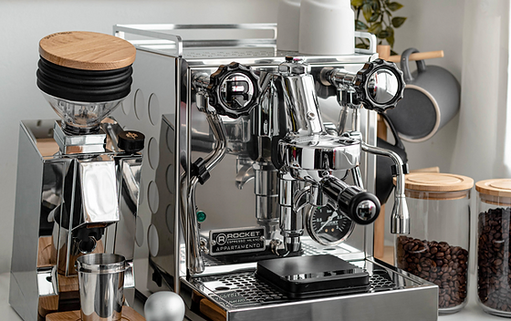
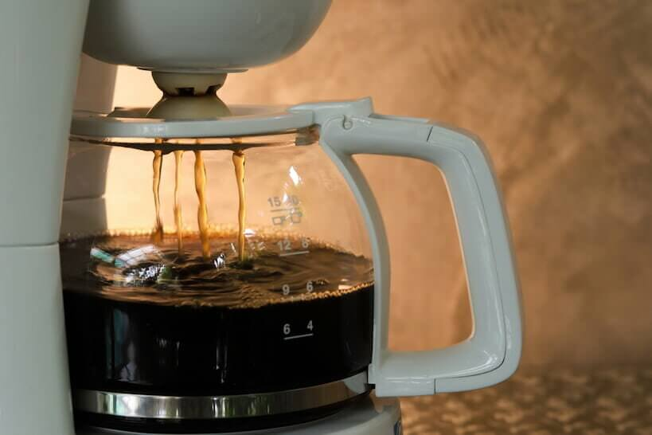
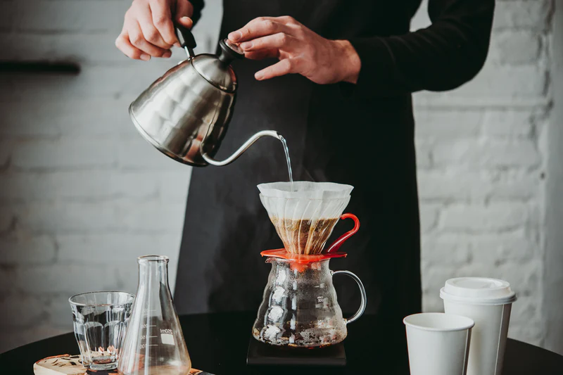
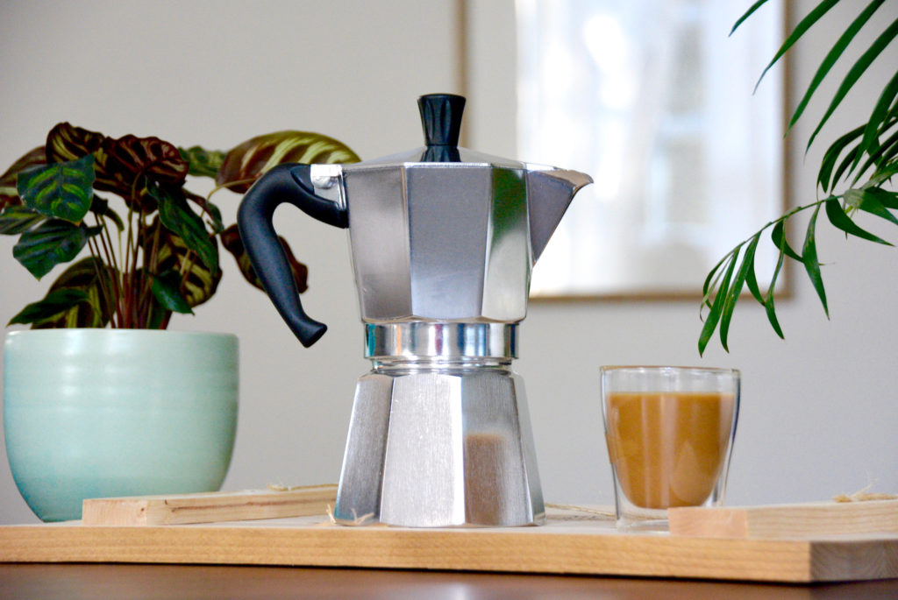

Brewing Methods of Coffee
There are a myriad of ways to brew coffee. The way coffee is brewed and prepared can drastically affect the flavor profile of the coffee drink even though they can all be brewed using a single type of bean. The most common way to prepare a coffee drink is either through a espresso machine or by using the drip coffee method. Here you will be able to read about and explore the many methods of brewing coffee.
Espresso Machine
Richly aromatic, highly-concentrated, extra-viscous coffee with delicious crema on top. Nothing quite compares to a freshly-brewed cup of espresso! Moreover, espresso is a core element of several popular coffee beverages, including cappuccinos, macchiatos, lattes, flat whites, and Americanos. These machines are capable of making our favorite java beverages all in a matter of seconds.

When most people think about coffee, this is one of the many methods that may pop up in their mind. Espresso machines are machines that mainly consist of a water source and a heat source to brew espresso. They also require a tamped-down "puck" of finely ground coffee beans. Lastly, they also require a container to store the finished espresso, usually a cup below the nozzle of the machine.
The reason for the espresso's high concentration and extra viscocity is due to how the machine extracts the coffee from the coffee grounds. In simple terms, an espresso machine works by using steam, pistons, or pumps to force hot water through the puck of tightly packed, finely ground coffee beans. The high pressure inside an espresso machine and the low water ratio to coffee give espresso its distinctive thick consistency.
Due to it's relatively high cost even for basic models, espresso machines are usually only found in coffee shops or vendors. For someone at home who wants to be able to enjoy a cup of espresso every now and then, its usually not worth the cost as aside from the economical factor, coffee machines also require time and labor for maintenance of the machine.
Drip Coffee Machine
A staple appliance that many people may already have in their household, a drip coffee machine is a simple way to make black coffee to start your day with. A drip coffee machine is the top choice for many households due to how easy to use and low-maintenance they are.

To understand how a drip coffee machine works, we should first go over its different components. Drip coffee machines have a water reservoir, a heating element, a showerhead, a filter compartment, and a carafe. A drip coffee maker works by the heating element boiling the water in the reservior to a specified temperature, then a tube collects the hot water and moves it through the showerhead. The showerhead distributes the hot water across the filter compartment, where it collects the coffee flavor and drips into the carafe.
Unlike an espresso machine, coffee grounds are required to be ground to a medium grind instead of a fine grind. The reason for that is because unlike an espresso machine, a drip coffee machine utilizes gravity to pull the water through the coffee grounds instead of relying on a piston or a pump. Having finely ground coffee beans in the reservior would make the brewing process extremely lengthy and would result in bitter coffee. The result of using properly ground coffee beans in a drip coffee machine is a cup of mild and aromatic black coffee.
Pour Over Coffee
While not too commonly seen, this style of manual brewing can be a great way to get a more satisfying cup of coffee. Pour over coffee can be described as the manual alternative to using a drip coffee machine. The person brewing the coffee is in charge of every aspect from boiling the water to the right temperature to the distribution of water over the coffee grounds.

To get started with this method, one must get a pour over brewer, a gooseneck kettle, and a gram scale. A thermometer is recommended as well to keep a close eye on the water temperature as the coffee grounds may get burnt by water that is too hot, making the coffee taste bitter. It is also important to mention that just like other brewing methods that rely on gravity for coffee extraction, the coffee grounds must not be too fine to avoid overextraction. A gram scale is crucial to properly measure the water to coffee grounds ratio, this is to ensure that the coffee isn't underextracted or overextracted.
Although this method posseses a notable learning curve, it is a method that grants the brewer a large degree of control over every cup of coffee. It is also a comparatively affordable method compared to an espresso machine, and it's small size means that the set-up can fit in many different locations. Picking up this method can be very rewarding to anyone who wishes to delve deeper into the art of coffee brewing.
Moka Pot
For people who want the experience of having a cup of concentrated espresso at home, the moka pot might just be the closest alternative to an espresso machine. Due to the functionality of the moka pot and how it works to brew coffee, it produces coffee that are more concentrated compared to the previous two methods mentioned. Instead of relying on gravity to extract coffee, the moka pot makes use of rising vapor pressures with its enclosed bottom chamber, resulting in a more concentrated brew.

It should be noted how the moka pot also posseses a learning curve that many may not expect and the first few initial brews may not be satsifactory. Due to the construction of the moka pot, the rubber gasket will require occasional replacement to ensure normal operation of the moka pot. The moka pot also requires more effort to clean compared to other methods.
French Press